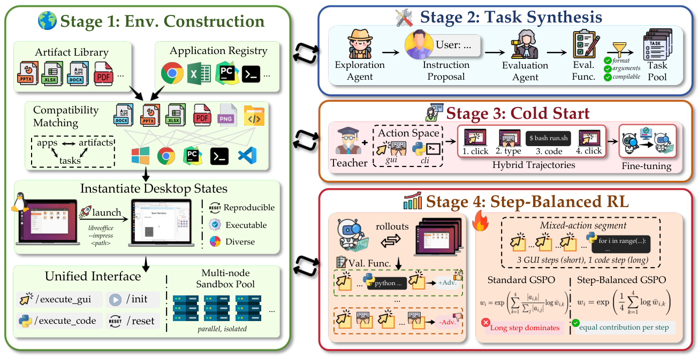
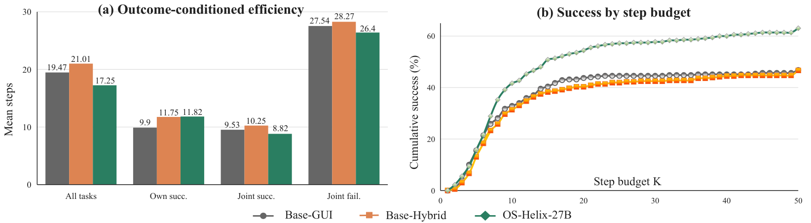
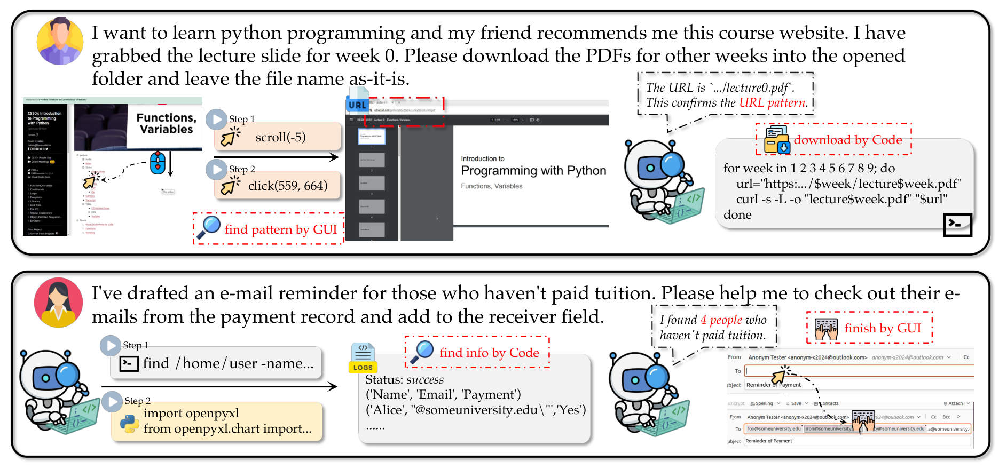

Executable desktop states
Applications and authentic file artifacts are composed into reproducible Ubuntu environments.
Native hybrid computer-using agent
One policy learns when to see, click, type, and run code across real desktop workflows.
The idea
GUI actions understand the visible interface. Code handles structured files and repeatable operations. OS-Helix trains one agent to coordinate both in the same action space.
Applications and authentic file artifacts are composed into reproducible Ubuntu environments.
Exploration grounds instructions in the current environment; a separate evaluator checks the final state.
Filtered GUI/code trajectories initialize the policy, followed by online RL with Step-balanced GSPO.
Framework
OS-Helix connects environment construction, grounded task generation, hybrid demonstrations, and live desktop reinforcement learning.

The four stages of the OS-Helix training pipeline.
Main experiments
Results from the paper, with success rates shown as percentages.
OSWorld-Verified
66.44%OS-Helix-27B-RL · 361 tasks
WindowsAgentArena
63.87%OS-Helix-27B-RL · 50-step budget

The trained policy uses fewer interactions and covers more successes under small step budgets.
Agent behavior
In representative traces, the agent carries information across modalities: it reads the visible interface, performs precise operations with code, and returns to the GUI when the task calls for it.

Representative GUI-to-code and code-to-GUI handoffs from the paper.
Abstract
Real desktop automation is neither purely visual nor purely programmatic. OS-Helix is an end-to-end trained multimodal computer-using agent that unifies GUI actions and code execution in one action space. Its training pipeline composes applications with authentic artifacts to create executable desktop states, synthesizes environment-grounded tasks with independent evaluators, and combines filtered hybrid SFT with online reinforcement learning. Step-balanced GSPO balances the contribution of heterogeneous GUI and code steps. On OSWorld-Verified, OS-Helix-27B-RL reaches 66.44% success, with additional evidence of transfer to WindowsAgentArena.